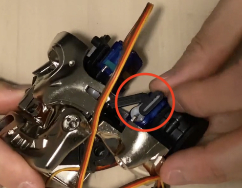
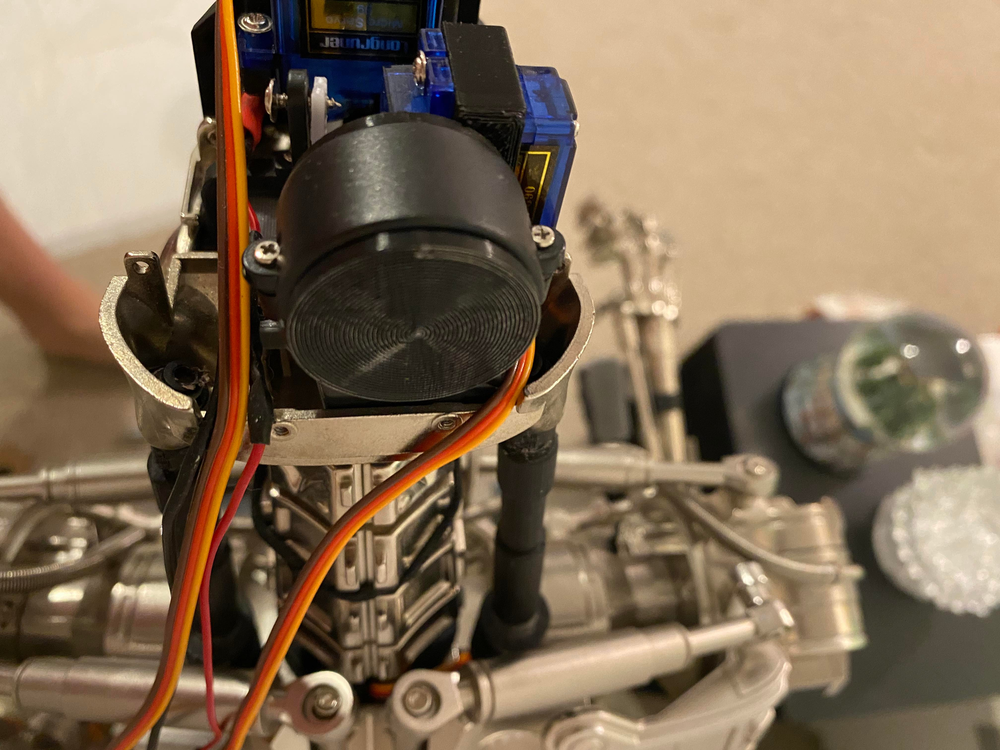
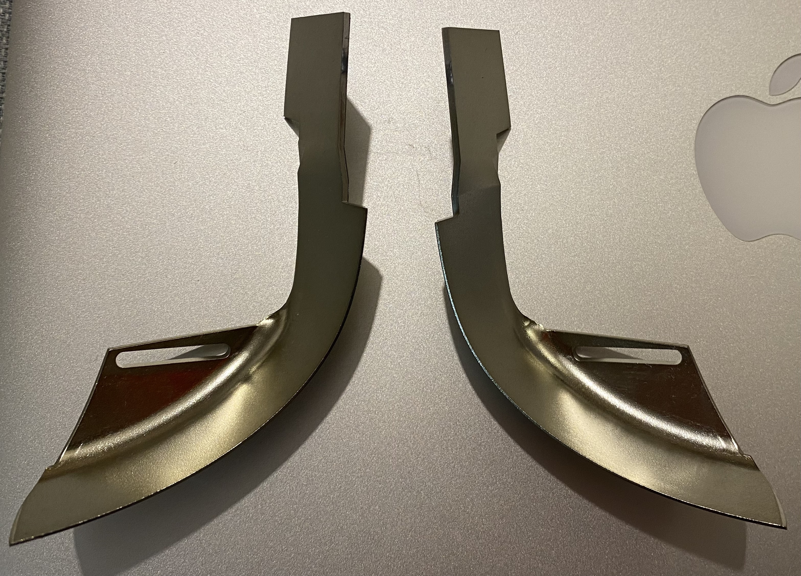
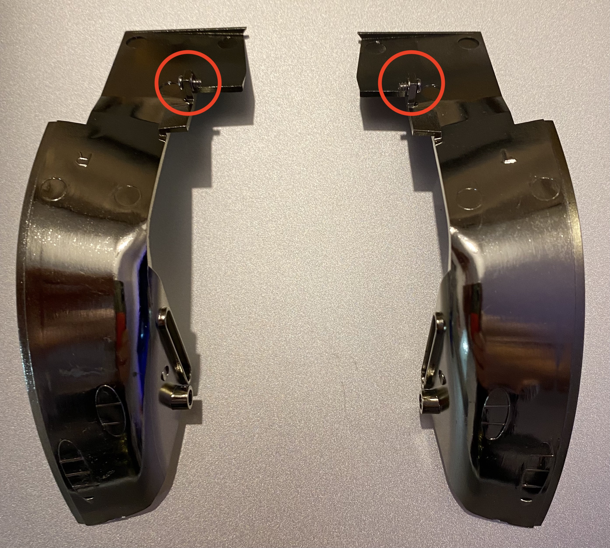
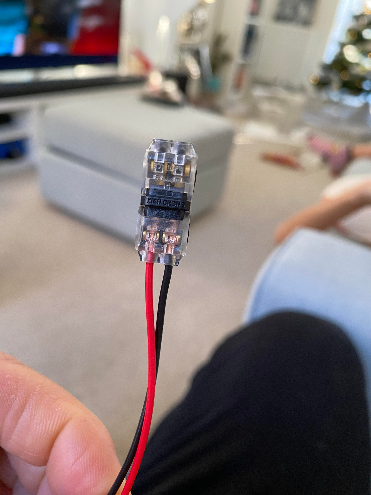
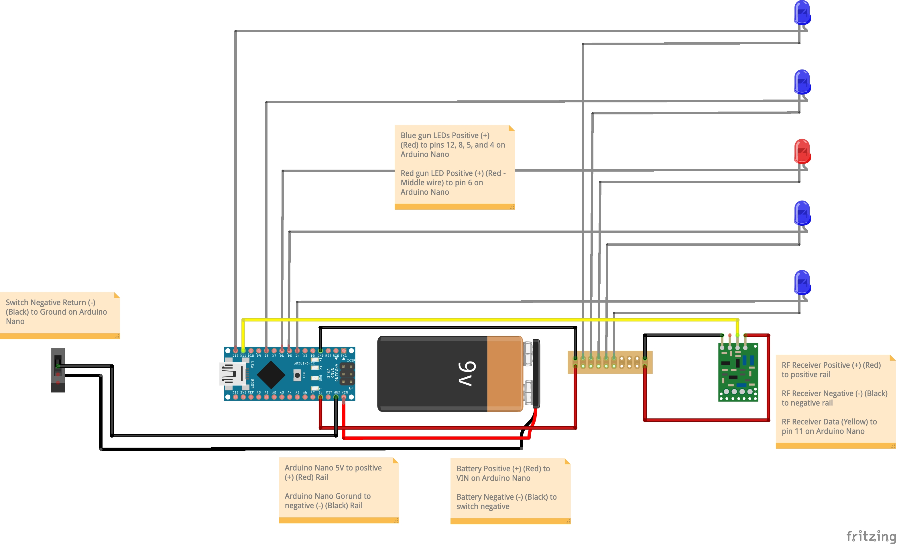

NOTE: Please ensure that the jaw mechanisim is this side of the servo horn with the black part facing you and not the white servo horn before you secure with the screw (Don't overtighten the screw, it works best when it has a bit of freedom).

NOTE: Please also ensure that all the cables route out of the T800s left side of the rear head as shown below.
Only the jaw servo wire should route out to the right side of the rear head.
This ensures that when the eyes move left to right they're not restricted in their movement and range which can be a problem should you ignore this step.

Neck Mod
Estimated fitting time to complete 10 mins
Piston Mod
Estimated fitting time to complete 10 mins
NOTE: I don't fit my pistons until the neck and body are attached to the T800.
Please be careful when fitting these parts that you dont put too much downforce pressure on your T800 head otherwise you'll damage the neck mechanisims.
You will have to remove the rear collar bone pistons at the back that attach to the shoulder. See image below.
Reattach them when you've fitted your modded pistons.
DON'T overtighten the rear collar bone pistons circled red below as it will prevent up and down movement.
Shoulders must be posed square to allow the mechanisim to move.
Posed drooping shoulders forward or back will prevent range and in time no doubt burn out the gear and motor.
When/if you want to pose with the shoulders not square don't use the up and down commands.
A 7/64 allen key required (not included in the kit). You can find here
Pistons will be painted silver.

As this is a hackless mod you will need to leave these back plate inserts off as the mechanisim runs into the upper torso.
To remove them just remove these 2 screws circled in red below. You can if you wish cut these inserts in two if you want to hide the internals and fit accordingly.
I prefer to keep mine hack free and so removing them only for myself.

All cable routing can go through the small gap circled in red below and down your support poles.
Pistons attach to the exisiting fitting on the back plate where the stock ones attach circled in red below.
T800 base Components Wiring Diagram
NOTE: Your kit comes 90% wired.
Just in case something works loose in transit you have this to refer to.
You will need to connect the base LEDS, eye LEDS to the Arduino and the Speaker to the MP3 as per above
Your kit comes with x5 sets of positive and ground extension cables as below to connect the base leds and speaker (JST connection wasn't possible so you will need to snip those off).
YOU WILL NEED TO ENSURE THE CONNECTION IS GOOD BEFORE CLAMPING THESE DOWN - I USE PLIARS TO DO THIS
No soldering is required on the kit at all.

T800 Servo Wiring Diagram
NOTE: Your kit comes with x5 made up sets of servo wires
RED (Positive) BLACK (Negative) and YELLOW (Signal connects to Arduino specificed pin above)
You will need to route these cables down the support poles.
A 8-10mm metal drill bit is required to drill the poles. Or you can cable tie to the support poles. It's up to you how you prefer to do it.
T800 Plasma Rifle Wiring Diagram

NOTE: Your kit comes with x1 rechargeable micro USB 9v battery with cable attached to allow for easy charging via a PC/MAC or a mains outlet.
You may be wondering why x1 Red led, well Red and Blue make Purple which is the colour for the lazer as in the movie.
To ensure the colours mix have the Red led as the center one in the LED array, it is wired this way already for you.